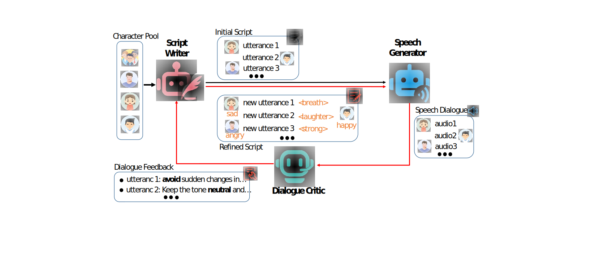

DialogueAgents:
A Hybrid Agent-Based Speech Synthesis Framework for Multi-Party Dialogue
Abstract.
Speech synthesis is essential for advancing human-computer interaction. However, current datasets for training speech synthesis models often suffer from high construction costs, limited role diversity, and poor emotional expression. In this paper, we propose DialogueAgent, a hybrid agent-based speech synthesis framework for multi-party dialogue. DialogueAgent employs three specialized agents—Script Writer, Speech Generator, and Dialogue Critic—to collaboratively generate and refine dialogues. By iteratively adapting the script to better fit the conversation scenario through speech review and feedback, the framework enhances emotional expressiveness and paralinguistic features in synthesized speech. Using this framework, we introduce MultiTalk, a bilingual, multi-party, multi-turn speech dialogue dataset covering diverse topics. Additionally, we present two metrics tailored to dialogue-level speech evaluation to measure the emotional expressiveness and naturalness of turn-taking. Extensive experiments demonstrate the effectiveness of our framework and the high quality of the MultiTalk dataset.
This page is intended solely for the purpose of research demonstration.
Overview

Chinese Samples
| Scripts | Framework Synthesis |
|---|---|
{
"id": "0",
"topic": "讨论家庭聚会的安排",
"conversation": [
{
"speaker": "张志强",
"text": "大家好，今天我们来聊聊下周的家庭聚会吧。我觉得应该有一个相对详细的安排。",
"prompt": "Friendly"
},
{
"speaker": "王娟",
"text": "我同意，但我们也要考虑每个人的时间安排，特别是小雪，她可能有其他计划。",
"prompt": "Thoughtful"
},
{
"speaker": "李小雪",
"text": "没错妈妈，其实...[breath]我和小美在昨天已经约好了周末去逛街。要不我们调整一下时间？",
"prompt": "Hesitant"
},
{
"speaker": "王娟",
"text": "我觉得可以，那你记得提前和小美沟通一下。",
"prompt": "Agreeing"
},
{
"speaker": "李小雪",
"text": "好的妈妈，没问题。",
"prompt": "Affirmative"
}
]
}
|
|
LJSpeech Samples
| Text | Ground Truth | DiffGAN-TTS | CM-TTS |
|---|---|---|---|
| America has produced a good many showy books, the typography, paper, and illustrations of which are, however, all wrong. | Confinement for twelve months in the bristol jail was counted a punishment equivalent to seven years' transportation.. |
Ethics Statement
Given the ability of CM-TTS to synthesize speech while preserving the speaker's identity, potential risks of misuse, such as deceiving voice recognition systems or impersonating specific individuals, may arise. In our experiments, we operate under the assumption that users willingly agree to be the designated speaker for speech synthesis. In the event of the model's application to unknown speakers in real-world scenarios, it is imperative to establish a protocol ensuring explicit consent from speakers for the utilization of their voices. Additionally, implementing a synthetic speech detection model is recommended to mitigate the potential for misuse.